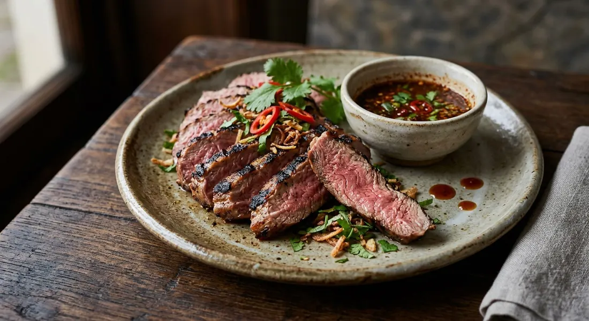

Thai-style grilled lamb — lamb marinated or dry-rubbed the Thai way, grilled over charcoal, and served with a spicy-sour jaew dipping sauce. The lamb dish on Thai restaurant sizzling menus.

แกะย่าง
Gae yang is grilled lamb done the Thai way: the meat seasoned with a spice rub or a fish-sauce marinade rather than mint sauce, cooked over charcoal, and brought to the table with jaew — the roasted-chilli, shallot and fish-sauce dip that belongs to every Isan grill. It is the lamb dish on Thai restaurant sizzling menus.
Lamb is not a classic Thai ingredient, and Thai cooks treat it accordingly: the seasoning is built to cut the meat's strong smell and carry heat, and the dip does the rest.
| Thai | English | Amount |
|---|---|---|
| เนื้อแกะ | Lamb (rump, rack or leg) | 750g - 1kg |
| Thai | English | Amount |
|---|---|---|
| ผงกระเทียม | Garlic powder | 1 tbsp |
| พริกไทยดำป่น | Ground black pepper | 1 tbsp |
| พริกป่น | Chilli powder | 1 tbsp |
| พริกป่นปาปริก้า | Paprika | 1 tbsp |
| เกลือ | Salt | 1 tbsp |
| เมล็ดยี่หร่า | Cumin seeds, toasted and ground — optional | 1 tbsp |
| Thai | English | Amount |
|---|---|---|
| น้ำปลา | Fish sauce, for the Isan-style marinade | 2-3 tbsp |
| น้ำตาล | Sugar | 1-2 tsp |
| ข้าวคั่ว | Toasted rice powder, dusted on before grilling | 1 tbsp |
| Thai | English | Amount |
|---|---|---|
| น้ำจิ้มแจ่ว | Jaew dipping sauce | to serve |
| ข้าวเหนียว | Sticky rice | to serve |
Two routes circulate in the Thai sources. The dry rub — garlic powder, black pepper, chilli powder, paprika and salt, the same formula the Isan grill uses for every meat — is rubbed on and left to work for half an hour to two hours. The wet route marinates the lamb in fish sauce and sugar overnight, then dusts it with toasted rice powder before it hits the fire. Both are published; the rub is the house style, the marinade is the slow-weekend style.
The Xinjiang route toasts cumin and Sichuan pepper and grinds them with dried chilli — the spice blend the Australian lamb board publishes on its Thai pages. And where the priority is taming the smell for Thai palates, the sources reach for herbes de Provence in the marinade, with a parsley-butter sauce to serve. The dish travels.
Charcoal, always. The lamb goes onto a medium-low bed and is grilled to a rosy medium, turned so the rub chars without burning, then rested five minutes before slicing. The resting is non-negotiable in the sources — it is what keeps the meat moist.
Jaew is the standard: roasted chillies pounded with shallots, fish sauce, lime and toasted rice powder — sharp, savoury, smoky. The meat doesn't carry much heat itself; the dip supplies it. Sticky rice on the side completes the Isan setting.
The nam-tok variant chops the grilled lamb and tosses it with the jaew dressing, shallots, herbs and lime, served as a warm salad. Some menus list it separately; it is the same grill, dressed.
Lamb smell is strong, and the Thai sources say so openly — the marinade and the rub are deodorising steps as much as flavour. Season early, grill low, rest, slice, dip. The whole dish is that sequence.
This recipe is translated from the following Thai-language sources. Where they disagree, we've said so.
1. Bloggang — แกะย่างน้ำจิ้ม / แกะย่างน้ำตก — https://www.bloggang.com/m/viewdiary.php?id=wistakitchen&month=06-2007&date=03&group=2&gblog=12
2. Cookpad — ซี่โครงแกะย่าง — https://cookpad.com/th/recipes/6199948
3. Aussie Beef & Lamb Thailand — Aussie lamb barbecue, Xinjiang style — https://www.thailand.aussiebeefandlamb.com/recipes/lamb/lamb/aussie-lamb-barbecue-xinjiang-style/
4. TrueID Food — เนื้อแกะหมักสมุนไพร — https://food.trueid.net/detail/xpbl1oRGDOAn
5. Ajinomoto Thailand — Arabian Grilled Lamb — https://www.ajinomoto.com/th/umami/umami_recipes/arabian-grilled-lamb